Module 07 — Utilisation de Vi¶
La transcription du support Drive et l’aide pédagogique sont séparées pour rendre leur provenance explicite.
Le dossier de ce module contient des énoncés et corrections de TP, sans support de cours distinct. Les documents disponibles sont reproduits intégralement ; aucun support manquant n’a été reconstitué par IA.
SOURCE DRIVE · TRANSCRIPTION DU SUPPORT
Le contenu des documents du dossier TSSR est transcrit ci-dessous, page par page. Les textes et tableaux sont intégrés à la page Web. Aucun fichier PDF, aucune diapositive entière ni aucune reproduction de page n’est affiché. Seuls des croquis ou visuels isolés et vérifiés peuvent accompagner la transcription. Les versions et les consignes restent celles des supports de formation. Les compléments IA sont conservés dans leur onglet distinct.
Énoncé · Enoncé du TP - Utilisation de Vi · 7 pages transcrites
Utilisation d'une distribution GNU/Linux
Utilisation de Vi
TP du Module 07 – Editer du texte sous Linux
Avant de démarrer ce TP, il convient d’avoir suivi les vidéos du module 7 et d’avoir effectué le TP précédent.
Durée estimée
45 à 60 minutes
Énoncé
Dans le module que vous venez de parcourir, vous trouverez les commandes nécessaires pour répondre aux questions.
- Ouvrez le fichier Edition de votre répertoire d'accueil avec vi .
- Le premier Dupont Jean se prénomme en fait Jean-Jacques. Rechercher la première occurrence de Dupont Jean .
- Déplacez-vous sur le n de Jean puis insérez -Jacques .
- De la même manière, recherchez Dupont Pierre et insérez Jean-après vous être placé sur le 'P' de Pierre.
- Replacez-vous en début de fichier .
- Cherchez le premier Dupont et insérez sur la ligne précédente votre nom et prénom.
- Entrez le nom et le prénom de votre voisin après la ligne du dernier Dupont. Déplacez-vous dans le fichier sur les différentes occurrences avec les touches 'n' et 'N'.
- Enregistrez les modifications apportées au fichier et sortez de l'éditeur.
- Dupont Jean s'appelle en fait Merlin-Duval Jean. Recherchez Dupont Jean et changez Dupont par Merlin-Duval.
- Supprimez la ligne Couteau Jean après l'avoir retrouvé.
- Changez tous les Dupont en Durand .
- Déplacez toutes les lignes contenant Durand en fin de fichier.
- Ajoutez un second Ben Raf, en dupliquant la ligne existante.
- Sans sortir de la session vi, affichez la date et l'heure (pour savoir si c'est l'heure de la pause).
- Créez un fichier .vimrc dans le répertoire de connexion ($HOME), dont le contenu va permettre d'afficher les numéros de lignes, de positionner les tabulations tous les 5 caractères et de passer en mode non compatible (Linux uniquement) .
Recherche globale avec remplacement.
- Recherchez et remplacez tous les Durand en Dupont.
- Substituez Jean en Jean-Paul.
- Substituez Jean en JEAN (sans écrire JEAN dans l'expression régulière).
- Substituez JEAN en Jean en modifiant le séparateur de l'expression régulière.
- Substituez Jean en Jean-Jean sur tout le texte.
- Ajoutez (033) devant chaque numéro (en fin de ligne) commençant par 1,2 ou 3.
Exemple: Frederic Thouin (033)124666- Ajoutez 0 (zéro) à la fin de toutes les lignes qui commencent par 'F'.
Solution
Une solution est proposée pour ce TP sous la forme d'un PDF commenté, disponible dans
les ressources à télécharger.
Référence du document : 1_NcmRFZlM6nu_JCNLekgXw5bgCmPPgym · SHA-256 62f4e4cee5500e66…
Correction · Solution du TP - Utilisation de Vi · 13 pages transcrites
Correction originale : à consulter après avoir tenté l’exercice.
Utilisation de Vi
TP du Module 07 – Editer du texte sous Linux
Avant de démarrer ce TP, il convient d’avoir suivi les vidéos du module 7 et d’avoir effectué le TP précédent.
Durée estimée
45 à 60 minutes
Proposition de solution
Dans le module que vous venez de parcourir, vous trouverez les commandes nécessaires pour répondre aux questions.
- Ouvrir le fichier Edition de votre répertoire d'accueil avec vi .
vi Edition- Le premier Dupont Jean se prénomme en fait Jean-Jacques. Recherchez la première occurrence de Dupont Jean .
/Dupont Jean
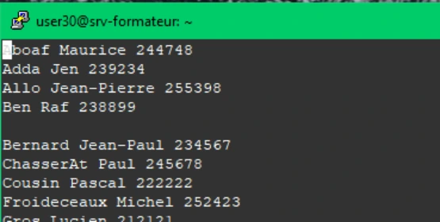
- Déplacez-vous sur le n de Jean puis insérez -Jacques .
2ea-Jacques
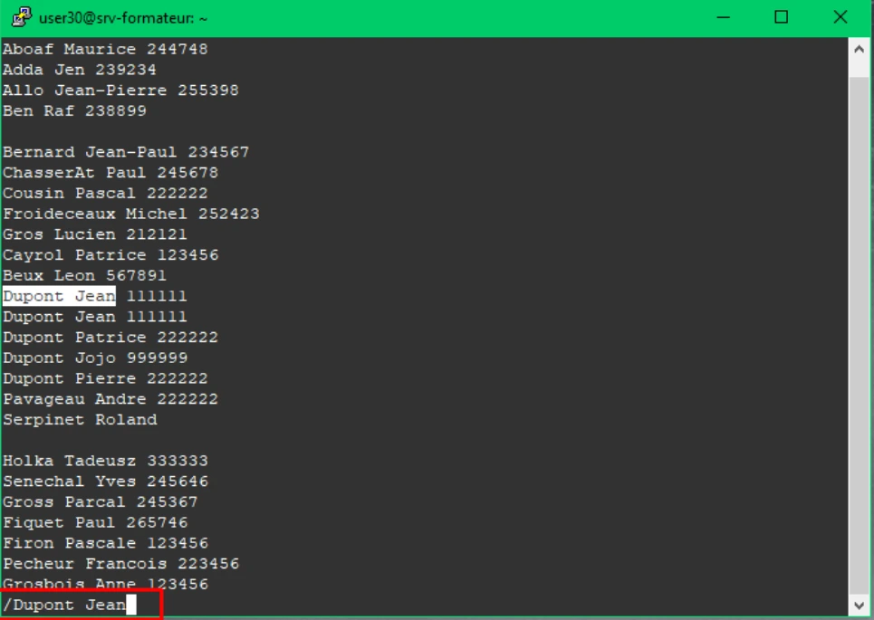

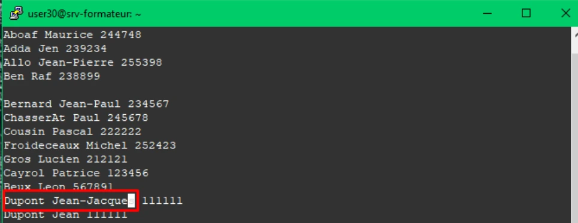
- De la même manière, recherchez Dupont Pierre et insérez Jean-après vous être placé sur le 'P' de Pierre.
/Dupont PierrewiJean-- Replacez-vous en début de fichier.
escgg- Cherchez le premier Dupont et insérez sur la ligne précédente votre nom et prénom.
/DupontOCLAVEAU Mathieu
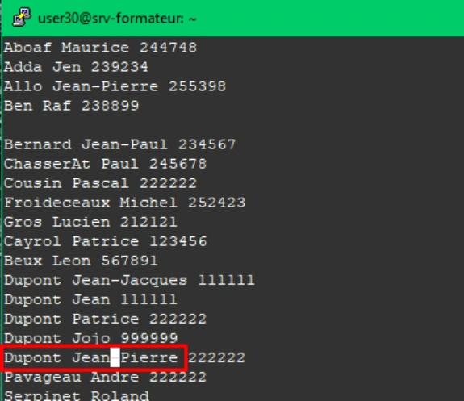
- Entrez le nom et le prénom de votre voisin après la ligne du dernier Dupont. Déplacez-vous dans le fichier sur les différentes occurrences avec les touches 'n' et 'N'.
G?DupontoRichez Cédric- Enregistrez les modifications apportées au fichier et sortez de l'éditeur.
:wq
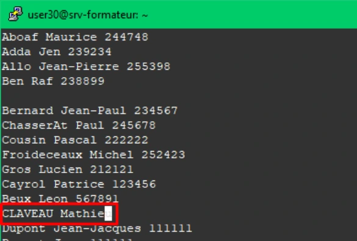

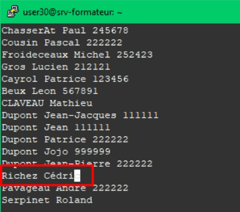
- Dupont Jean s'appelle en fait Merlin-Duval Jean. Recherchez Dupont Jean et changez Dupont par Merlin-Duval.
vi Edition/Dupont JeanncwMerlin-Duval- Supprimez la ligne Couteau Jean après l'avoir retrouvé.
/Couteau Jeandd- Changez tous les Dupont en Durand .
: g/Dupont/s//Durand/g
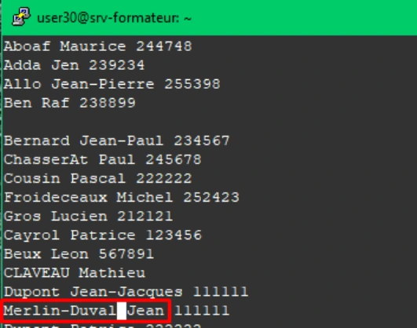
- Déplacez toutes les lignes contenant Durand en fin de fichier.
: g/Durand/m$
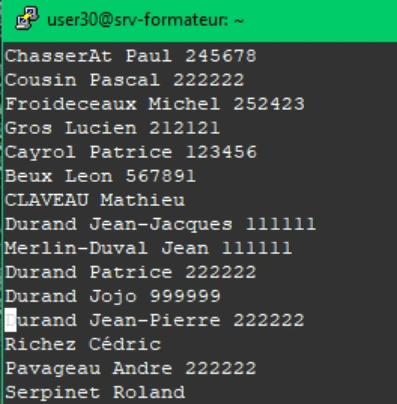

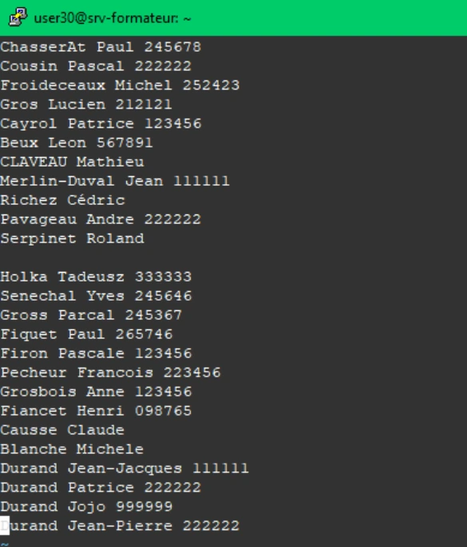
- Ajoutez un second Ben Raf, en dupliquant la ligne existante.
/Ben Rafyyp- Sans sortir de la session vi, affichez la date et l'heure (pour savoir si c'est l'heure de la pause).
:!date- Créez un fichier .vimrc dans le répertoire de connexion ($HOME), dont le contenu va permettre d'afficher les numéros de lignes, de positionner les tabulations tous les 5 caractères et de passer en mode non compatible (Linux uniquement) .
vi .virmciset numberset tabstop=5set nocompatibleRecherche globale avec remplacement.
- Recherchez et remplacez tous les Durand en Dupont.
vi Edition:g/ Durand/s//Dupont/
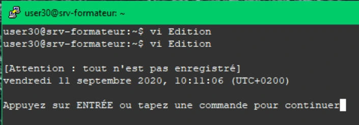

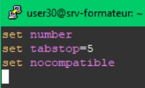
- Substituez Jean en Jean-Paul.
g/Jean /s/Jean/&-Paul(attention à mettre un espace après Jean comme vous pouvez le voir dans la capture d’écran suivante)
- Substituez Jean en JEAN (sans écrire JEAN dans l'expression régulière).
:g/\(Jean\)/s//\U\1/
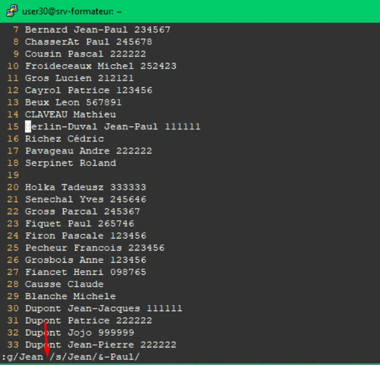
- Substituez JEAN en Jean en modifiant le séparateur de l'expression régulière.
:g/JEAN/s//Jean/
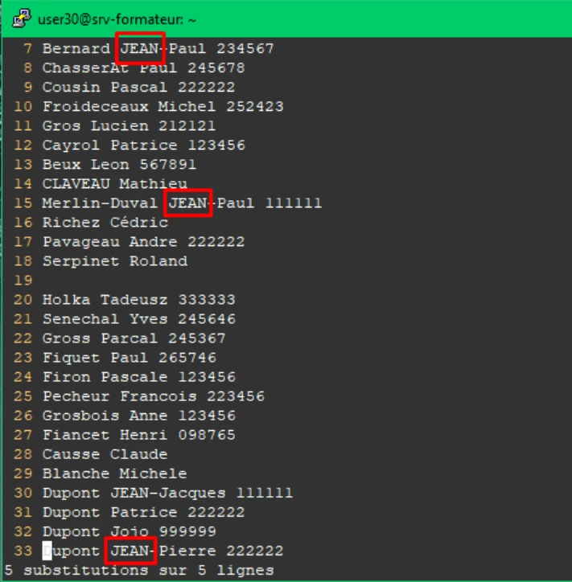
- Substituez Jean en Jean-Jean sur tout le texte.
:%s/Jean/Jean-Jean/
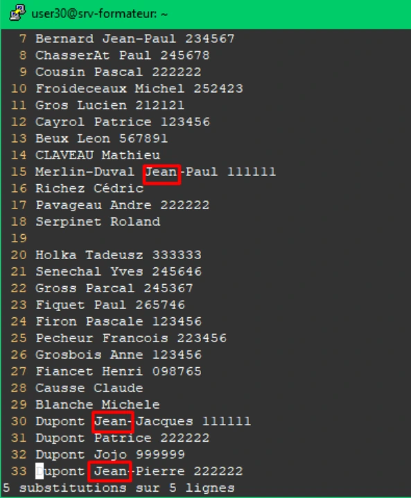
- Ajoutez (033) devant chaque numéro (en fin de ligne) commençant par 1,2 ou 3.
Exemple : Frederic Thouin (033)124666:%s/\<[1-3]/(033)&/
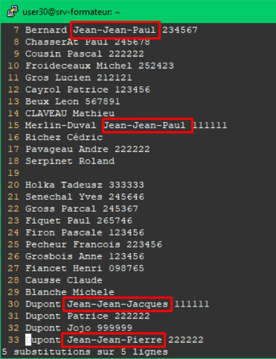
- Ajoutez 0 (zéro) à la fin de toutes les lignes qui commencent par 'F'.
g/^F/s/$/0/
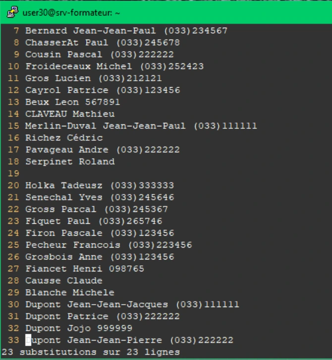
Solution
Une solution est proposée pour ce TP sous la forme d'un PDF commenté, disponible dans les ressources à télécharger.

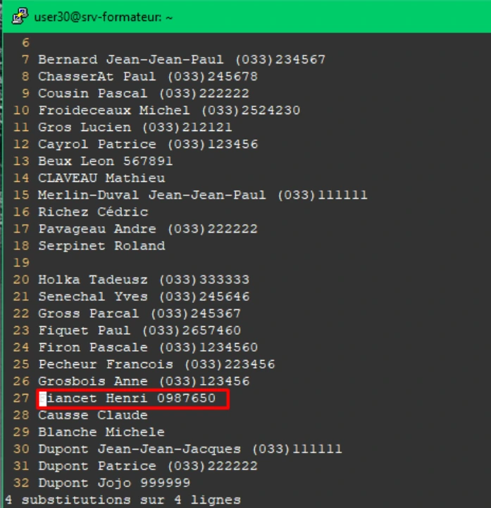
Référence du document : 1cSuFMkKLzf-5P7v0aszRGy6bE4qiyZHs · SHA-256 91154f62451e05b1…
Complément IA / externe au cours — fiche pédagogique du portail
Cette fiche contient une reformulation et des aides d’apprentissage rédigées par IA. Elle est distincte de la transcription des documents du Drive et ne la remplace pas. Les schémas de synthèse de cette fiche sont des illustrations IA / externes au cours, sauf les captures explicitement attribuées à un document source.
Sources du module. Énoncés et corrections des TP du module. Aucun support théorique distinct n’est fourni.
Modifier le fichier Edition par déplacements, insertions, recherches, copies de lignes et substitutions. Les 22 consignes du TP sont conservées dans leur ordre ; la correction utilise des fonctionnalités Vim sous le nom Vi.
Durée des ateliers. 45 à 60 minutes. Lire chaque énoncé avant de commencer. Employer la machine et les fichiers de formation prévus.
Objectifs¶
- Se déplacer et modifier un texte en identifiant le mode actif.
- Chercher, copier, déplacer et enregistrer des lignes.
- Choisir la portée, les ancrages et le séparateur d’une substitution, puis vérifier le résultat.
1. Reconnaître le mode avant de taper¶
| Mode | Ce que font les touches | Retour ou validation |
|---|---|---|
| Normal | Déplacer, rechercher, copier, supprimer, entrer dans un autre mode | Échap permet de s’y replacer |
| Insertion | Ajouter le texte demandé | Échap termine la saisie |
| Commande Ex | Exécuter une commande commençant par : | Entrée la valide |
| Recherche | Saisir un motif après / ou ? | Entrée, puis n ou N |
La même lettre peut donc être une action en mode normal et un caractère ajouté au fichier en mode insertion. Les blocs de touches des activités se lisent comme une séquence, pas comme une commande shell à copier dans le terminal.
Illustration IA / externe au cours — Repérer le mode actif avant de taper.
2. Se déplacer et insérer¶
| Touche | Action utilisée |
|---|---|
gg / G |
Début / fin de fichier |
w / e |
Mot suivant / fin de mot |
2e |
Répéter deux déplacements de fin de mot |
i / a |
Insérer avant / après le caractère |
O / o |
Ouvrir une ligne avant / après |
dd |
Supprimer la ligne |
yy puis p |
Copier la ligne puis coller après |
cw |
Changer le mot à partir du curseur |
Les recherches /motif et ?motif vont respectivement en avant et en arrière. n continue dans le sens de la dernière recherche ; N inverse ce sens. Vérifier l’occurrence sélectionnée avant chaque modification.
3. Enregistrer, configurer et appeler le shell¶
:wq enregistre puis quitte. :!date exécute date sans fermer l’éditeur. Le fichier $HOME/.vimrc contient les options de Vim ; le document veut afficher les numéros, fixer tabstop à 5 et désactiver le mode compatible.
4. Lire une substitution¶
Illustration IA / externe au cours — décomposition d’une commande.
:%s/Dupont/Durand/g
││ │ │ └─ toutes les occurrences de chaque ligne
││ │ └──────── texte de remplacement
││ └──────────────── motif recherché
│└────────────────── substitution
└─────────────────── toutes les lignes du fichier
La commande globale :g/motif/action applique une action aux lignes sélectionnées. ^ et $ marquent début et fin ; & reprend le texte trouvé ; les groupes \(...\) peuvent être repris par \1 dans le remplacement. La modification du séparateur facilite certains motifs, mais ne change pas le but de la substitution.
Les commandes proposées dans l’aide pratique clarifient les coquilles du document. Les graphies originales restent visibles dans l’onglet Original. Le fichier Edition et ses noms constituent un jeu d’exercice fourni ; aucune donnée réelle n’est requise.
Ateliers complets¶
TP — Utilisation de Vi¶
Activité 1 — Ouvrir Edition depuis son répertoire personnel.¶
Activité 2 — Rechercher la première occurrence de Dupont Jean.¶
En mode normal, revenir au début avec gg, puis rechercher :
Valider par Entrée.Activité 3 — Se placer sur le n de Jean et insérer -Jacques après lui.¶
La correction utilise 2e depuis le début du nom, puis a. Saisir -Jacques et revenir au mode normal avec Échap :
Le résultat attendu est Jean-Jacques.Activité 4 — Rechercher Dupont Pierre puis insérer Jean- avant le P de Pierre.¶
Valider la recherche, saisir le préfixe en insertion puis Échap. Le prénom devient Jean-Pierre.Activité 5 — Revenir au début du fichier.¶
Appuyer sur Échap puis :
Activité 6 — Retrouver le premier Dupont et insérer son propre nom et prénom sur la ligne précédente.¶
Saisir le nom et le prénom demandés par le TP, puis Échap. O majuscule ouvre une ligne avant.Activité 7 — Ajouter le nom et le prénom du voisin après la ligne du dernier Dupont et parcourir les occurrences avec n et N.¶
G va en fin de fichier, ? recherche en arrière et o minuscule ouvre une ligne après. Saisir les informations de l’exercice, puis Échap. n répète la recherche dans son sens, N dans le sens opposé.Activité 8 — Enregistrer les modifications et quitter.¶
Activité 9 — Remplacer Dupont par Merlin-Duval pour le Jean visé par la consigne.¶
Rouvrir Edition, rechercher Dupont Jean et utiliser n pour sélectionner la bonne occurrence. Sur le mot Dupont :
Terminer avec Échap. Vérifier que les autres Dupont n’ont pas été modifiés.Activité 10 — Retrouver Couteau Jean et supprimer sa ligne.¶
Activité 11 — Changer tous les Dupont en Durand.¶
La correction utilise une commande globale : :g/Dupont/s//Durand/g. La forme ci-dessus explicite toutes les lignes et toutes les occurrences.Activité 12 — Déplacer toutes les lignes contenant Durand à la fin du fichier.¶
g sélectionne les lignes correspondantes et m$ les déplace vers la fin.Activité 13 — Dupliquer la ligne Ben Raf.¶
yy copie la ligne et p la colle après.Activité 14 — Afficher la date et l’heure sans quitter Vi.¶
Lire la sortie de la commande externe, puis revenir à l’éditeur.Activité 15 — Créer $HOME/.vimrc : numéros de ligne, tabulations de cinq caractères et mode non compatible.¶
Dans le fichier .vimrc, saisir :
Le nom .virmc imprimé dans la correction est une coquille. Revenir à Edition pour les remplacements suivants.Activité 16 — Rechercher et remplacer tous les Durand en Dupont.¶
Activité 17 — Substituer Jean en Jean-Paul, en respectant l’espace après Jean indiqué par la correction.¶
L’espace après le prénom fait partie du motif : il évite de transformer automatiquement les composés Jean-Jacques ou Jean-Pierre. La correction montre g/Jean /s/Jean/&-Paul ; l’aide rend la portée explicite.Activité 18 — Substituer Jean en JEAN sans écrire JEAN dans l’expression.¶
Le groupe capturé est repris par \1 et converti en majuscules par \U, dans Vim utilisé par le laboratoire.Activité 19 — Substituer JEAN en Jean en changeant le séparateur de la substitution.¶
Le séparateur # remplace /. La correction imprimée conserve / ; cette forme répond à la demande de l’énoncé.Activité 20 — Substituer Jean en Jean-Jean sur tout le texte.¶
% vise toutes les lignes et g toutes les occurrences d’une ligne. Le document omet g dans sa forme imprimée.Activité 21 — Ajouter (033) avant chaque numéro situé en fin de ligne et commençant par 1, 2 ou 3.¶
Le début de mot, les chiffres et la fin de ligne limitent le changement au numéro demandé. & reprend tout le numéro. La correction utilise seulement \<[1-3], sans ancrage de fin.Activité 22 — Ajouter zéro à la fin de toutes les lignes qui commencent par F.¶
^F sélectionne les lignes ; $ positionne l’ajout à leur fin. Enregistrer et contrôler les dernières modifications.Écarts et précisions du document¶
Lecture de la source
Le document écrit .virmc alors que l’énoncé demande .vimrc : la forme de travail est .vimrc.
Lecture de la source
Quelques lignes omettent le deux-points d’entrée en commande Ex. Il est ajouté dans les exemples utilisables.
Lecture de la source
La question19 demande un autre séparateur ; la correction ne le change pas. La forme avec # répond à cette partie de la consigne.
Lecture de la source
Les formes source des questions20 et21 ont une portée plus étroite que leur formulation ; les ancrages et le drapeau g sont expliqués, sans modifier le texte de la source.
À retenir¶
Revenir au mode normal avant une action sur les lignes. Tester une recherche avant de lancer une substitution globale. Vérifier les lignes modifiées avant d’enregistrer, et tester séparément les réglages de .vimrc.
Mini-quiz¶
- En mode insertion, que faire avant de taper
dd? - Quelle différence entre
Oeto? - Que contrôlent
%et le derniergdans:%s/a/b/g? - Comment changer le séparateur de la substitution ?
- Que désigne
$dans un motif de recherche ?
Réponses commentées
- Appuyer sur Échap pour revenir au mode normal. Dans ce mode,
ddsupprime la ligne courante. Oouvre une ligne au-dessus de la ligne courante etoen ouvre une en dessous. Les deux passent en mode insertion.%étend l’opération à toutes les lignes etgà toutes les occurrences de chaque ligne concernée.- Choisir un autre séparateur, par exemple
:%s#JEAN#Jean#g. Le caractère#délimite ici le motif et le remplacement. - La fin de ligne. Il sert notamment à cibler les numéros en fin de ligne dans l’activité 21.
Pour pratiquer et réviser¶
- TP : énoncés et corrections
- Fiche de révision
- Kahoot existant du module
- Commandes GNU/Linux
- Présentation du cours
Provenance pédagogique¶
Les consignes, noms et exemples proviennent des documents de formation disponibles. Les explications, contrôles, variantes explicitement signalées et mini-quiz sont une aide pédagogique distincte de la transcription originale. Les sorties de captures sont des exemples, pas des valeurs à imposer à chaque machine.
M07 — Utilisation de Vi
19 questions
Teste tes connaissances sur ce module.